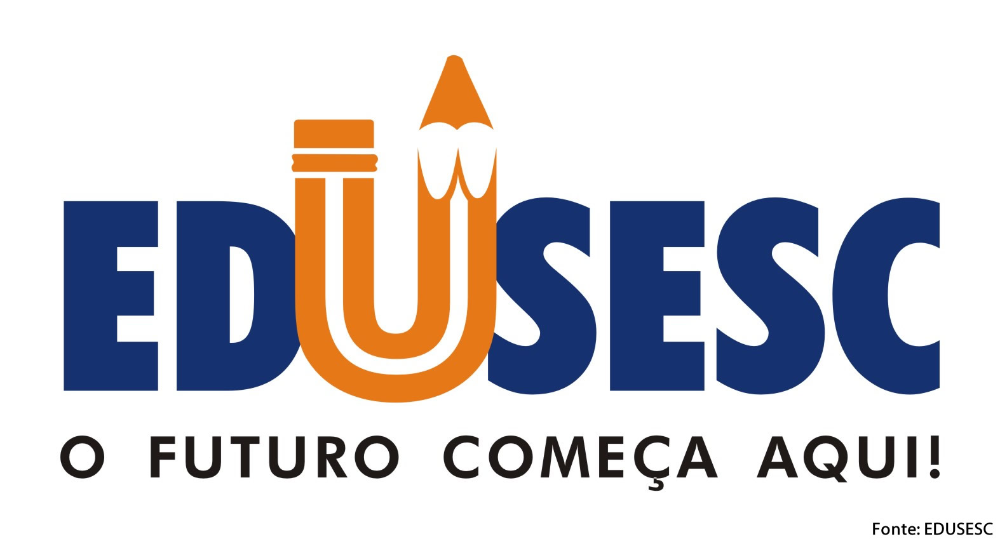

Início
Portifólio
Caderno Digital
Caderno Digital

Aula 1 - Criação de sites
Sobre a aula de Robótica
Aula 2 - Matéria de jornal
Aula 3 - Sistemas Numéricos
Aula 4 - App de agendamento
Aula 7 - Portas lógicas pt. 2